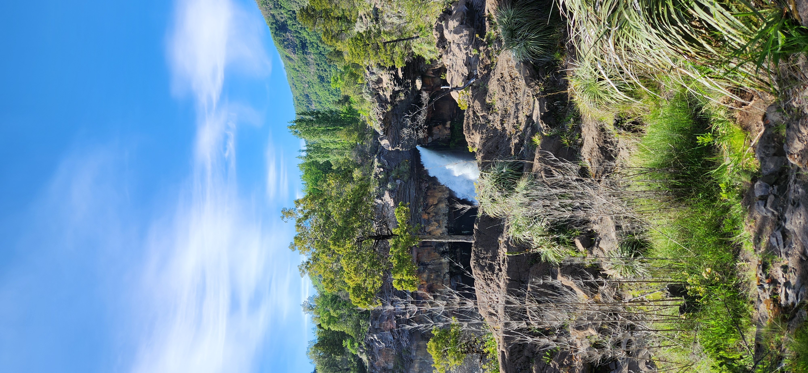
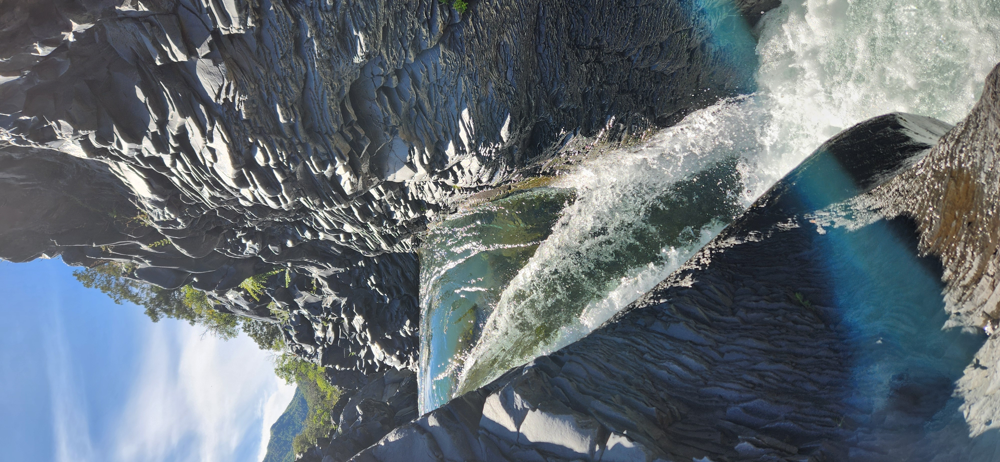
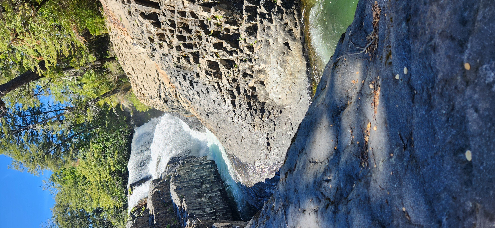

Orden de la Ruta Cordillerana
Un recorrido guiado por Cabalgatas Méndez diseñado para disfrutar la montaña con tranquilidad, deteniéndonos en los principales saltos de agua y miradores del sector.
Inicio en Fundo El Plan
Punto de PartidaRecepción de los participantes (desde 14 años) en Fundo El Plan (Los Pellines, Pinto), asignación de caballos mansos según experiencia y salida inicial por los senderos precordilleranos.
Primer Salto y Bosque Nativo
Primera CascadaInternación entre árboles nativos hasta llegar a la primera caída de agua encajonada entre paredes rocosas, ideal para detenerse a contemplar el entorno y tomar fotografías.

Cañones de Roca y Pozones Turquesa
Sector de Aguas CristalinasRecorrido bordeando formaciones rocosas esculpidas por el río de montaña, donde el agua toma tonos turquesa y esmeralda entre estrechos cañones naturales.

Mirador de Altura y Cordón Nevado
Vista PanorámicaAscenso hacia los puntos altos de la ruta con vista abierta hacia las caídas de agua en la ladera de la montaña y el macizo cordillerano nevado de fondo.

Cascadas de Basalto y Retorno al Fundo
Cierre del CircuitoParada final en los saltos escalonados sobre roca volcánica columnar antes de emprender el regreso tranquilo a caballo hacia Fundo El Plan.
